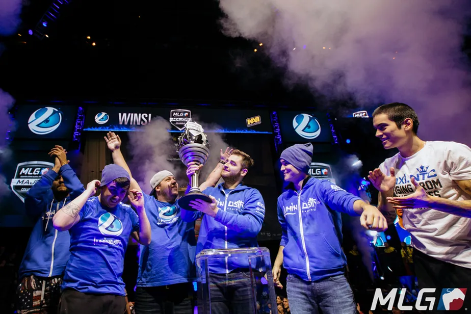

A Vitória do Brasil no Major MLG Columbus
O Major MLG Columbus de 2016 foi um marco histórico para o cenário de CS:GO no Brasil. A competição, realizada em Columbus, Ohio, nos Estados Unidos, reuniu as melhores equipes do mundo em busca do título mais cobiçado do jogo.
A equipe brasileira, conhecida como Luminosity Gaming na época, estava determinada a alcançar a glória. Com um desempenho excepcional durante todo o torneio, eles conseguiram chegar à grande final contra a equipe sueca Fnatic, uma das mais fortes e dominantes da época.
A final foi uma batalha épica, com cada equipe mostrando habilidades incríveis e estratégias inovadoras. O Brasil foi representado por jogadores talentosos como Gabriel "FalleN" Toledo, Fernando "fer" Alvarenga, Marcelo "coldzera" David, Lincoln "fnx" Lau e Epitácio "TACO" de Melo.
No último mapa da série, a equipe brasileira conseguiu uma virada impressionante, alcançando o placar final de 16 a 14. A celebração foi intensa, com os jogadores e a torcida brasileira comemorando a primeira vitória do Brasil em um Major de CS:GO.
A conquista do Major MLG Columbus pelos jogadores brasileiros foi um momento histórico para o país e para o cenário de CS:GO como um todo. Eles provaram que o Brasil tinha talento e habilidade para competir em nível mundial, abrindo caminho para o sucesso de outras equipes e jogadores brasileiros nos anos seguintes.
O Brasil tem uma história rica e vitoriosa no cenário competitivo de CS:GO. Desde os primeiros passos no jogo, jogadores brasileiros demonstraram habilidade e paixão pelo jogo, conquistando fãs ao redor do mundo.
Em 2016, a equipe brasileira Luminosity Gaming (mais tarde conhecida como SK Gaming) fez história ao vencer o Major MLG Columbus. Essa vitória foi um marco para o CS:GO brasileiro, mostrando que o país poderia competir em nível mundial.
A partir desse ponto, o Brasil se consolidou como uma das potências do CS:GO. Equipes como SK Gaming, Made in Brazil (MiBR) e FURIA Esports conquistaram diversos títulos internacionais e demonstraram consistentemente alto desempenho em torneios ao redor do mundo.
Além das equipes, jogadores brasileiros também brilharam individualmente. Nomes como Gabriel "FalleN" Toledo, Marcelo "coldzera" David, Epitácio "TACO" de Melo e muitos outros se tornaram lendas do jogo, ganhando respeito e reconhecimento dentro da comunidade.
O sucesso do CS:GO brasileiro não se restringe apenas às competições. O país também se destacou na organização de grandes eventos de esports, como a ESL One: Rio, que trouxe o Major de CS:GO para o Brasil em 2020, proporcionando momentos emocionantes para os fãs brasileiros.
Com uma comunidade apaixonada, jogadores talentosos e uma história de vitórias, o CS:GO brasileiro continua a evoluir e inspirar novas gerações de jogadores e fãs. O futuro promissor do cenário brasileiro nos enche de orgulho e expectativa.